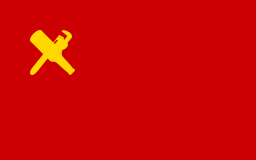
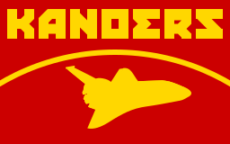
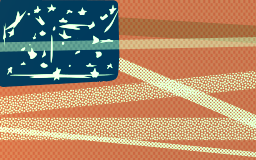
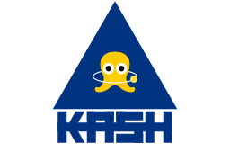

Union of Keviet Kommunist Republiks
Beer signifies their unlimited wealth, and the pipe wrench their willingness to work with any problem given. Or at least so does say the average drunk Keviet when asked.

Keviet Administration of Neutralizing Opponents' Efforts and Racing in Space
Rumors say that their ship design process involves stealing a rocket and putting better boosters on it. Nevertheless, this is the place to go for when you're looking for some bizarre designs.

United Krakens of Kramurrika
So, you're asking me as to why this flag is completely bugged... Well, what would you expect from a thing with fifty krakens literally embroidered on it?

Kramurrikan Agency of Sanctioning Heliocentrism
Have you ever thought of deciding who gets to enjoy properly working orbits? You see, the krakens have!
Download
License
Kraken.svg
"KERBAL SPACE PROGRAM" is a registered trademark of ELECTRO CHANGO, S.A. DE C.V.
All titles, content, publisher names, trademarks, artwork, and associated imagery are trademarks and/or copyright material of their respective owners.
All rights reserved.